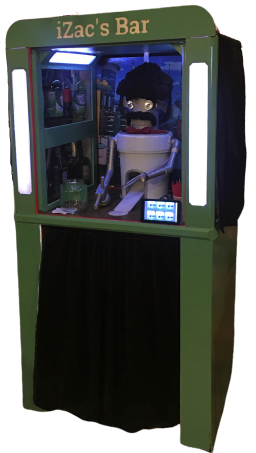
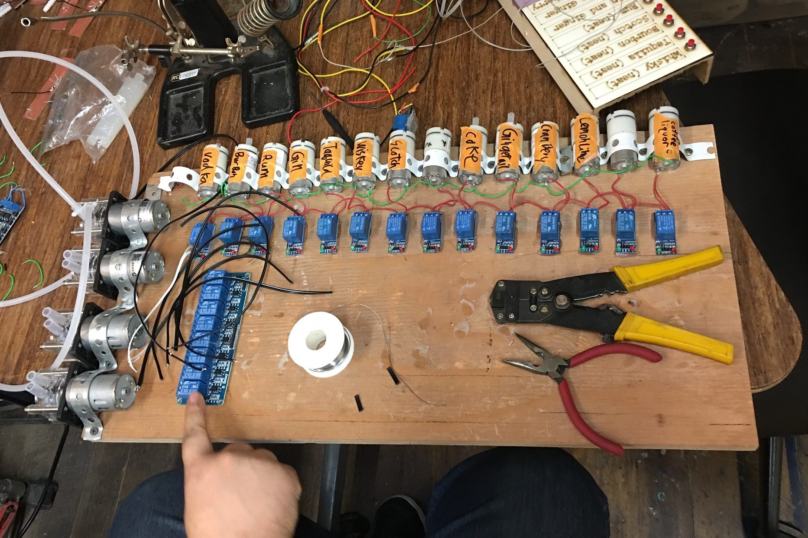
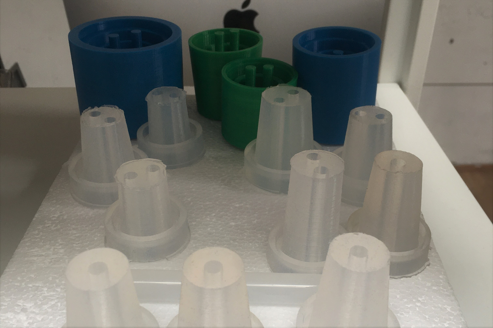
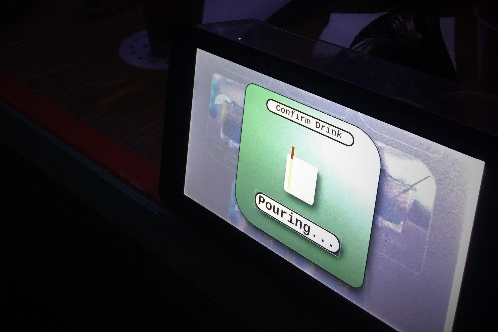
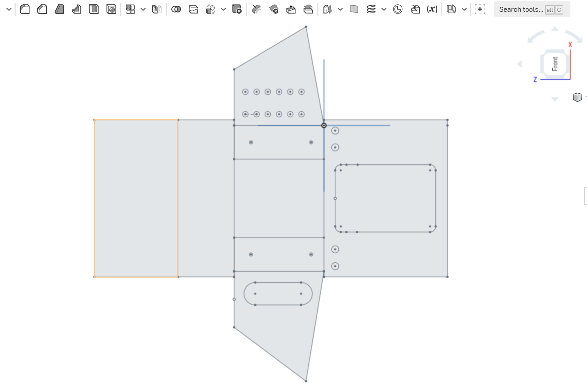

iZac's Bar: Documentation
About:
A joint project for the annual SF Robitic bartender competition, iZac is a fully functional bar with 190 drink options (although some of those would be terrible)
React / Node / Python running on a Rasberry Pi 4. The react UI calls a Node API which handles bottle stats, and calls a Python microservice to control pins.
Using combination of Air Pressure (liquor) and peristaltic pumps (soda) to control drink level. Node API tracks bottle fill level and adjusts pressure to equalize pour volumes

Construction:
   Pictured left -> right:
- 14 Air Pumps and 4 Peristaltic Pumps
- Custom Silicon bottle stoppers to maintain pressure in bottles
- Raspberry Pi with 7 inch touch display
- Laser Cut casing for Pi & Display
Maintenance:
Refilling Bottles:
- Remove Stoppers from bottles
- Pour appropriate alcohol into the new bottle using a funnel
- In iZac settings, select the refilled bottle and hit the 'Refill' option. If the bottle is not completely full, enter an estimated %
- Note: there is no fill indicator for bottles on peristaltic pumps. Here fluid pressure is not a concern.
Cleaning:
- Removing Hoses from pumps
- Cleaning Silicon stoppers
- Cleaning Drip Tray